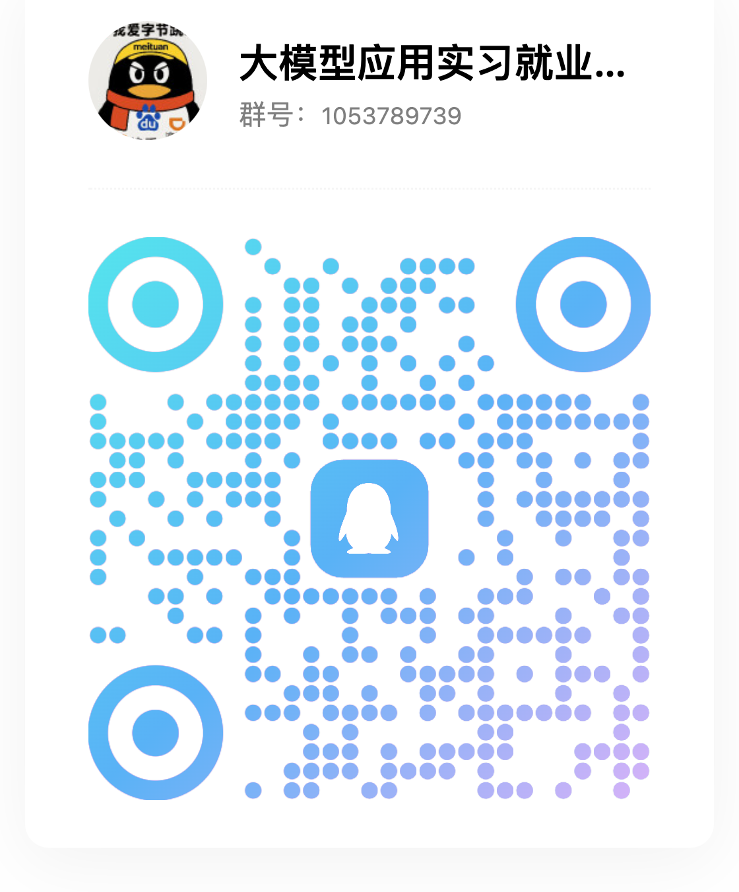

SuperMew 进化报告
从 RAG 原型到可部署的 Agentic Knowledge App。这一次的重点不是多加几个功能，而是把检索、Agent、后端边界和前端工程全部重新梳理，让项目从“能跑”走向“能维护、能观测、能给别人试”。
这次变化可以压缩成三句话。
RAG 不再只是“向量召回后塞给模型”；项目不再是 backend + frontend 里堆所有代码；Agent 也不再靠全局状态硬撑多用户并发。
RAG 更像流水线
召回、合并、精排、阈值过滤、纠错重写、复杂问题分解，全部进入可追踪流程。
结构 更像产品
后端拆出 API、chat、rag、indexing、infra、schemas；前端迁移到 Vite + Vue 3 + TS。
Agent 更稳定
每次请求独立上下文，RAG step、trace、工具调用预算不再互相污染。
检索被重构成一条可解释的生产流水线。
现在的 RAG 不是只返回 topK，而是先扩大候选池，再把碎片自动合并回父级上下文，最后通过 Rerank 和阈值门控过滤噪声。
RETRIEVAL_CANDIDATE_K 或 topK 倍数配置。
rerank_score 暴露给前端。
RERANK_MIN_SCORE 过滤低质片段，再由证据路由决定回答、改写、澄清或短路。
BM25 直接作为数据库能力运行。
原文写入启用中文 analyzer 的 text 字段，Milvus 服务端通过 FunctionType.BM25 自动生成 sparse embedding；本地 embedding 只负责 Dense 向量。
text，输出 sparse_embedding，统计由向量库自动对齐。
复杂问题不再硬塞进一轮检索。
主图先用本地规则识别明显的单事实问题；其余问题由 FAST_MODEL 一次完成复杂度判断和 2-4 个子问题规划。复杂问题通过 LangGraph Send 并行检索，再由独立的 GRADE_MODEL 评判证据。
复杂度路由
本地快判直接处理明显简单问题；FAST_MODEL 只处理其余查询。
子问题分解
将一个大问题拆成覆盖不同维度、互不重叠的检索入口。
并行执行节点
rag_sub_agent 直接执行 retrieve → grade，多个子问题并行召回和评判。
有效证据合成
最终 synthesis 只合并有效或部分有效证据，按 chunk 去重，并输出 sub_traces。
答不上来时，系统先判断证据状态。
评分节点升级成结构化证据路由器，不只看“相关/不相关”，还会输出可回答性、歧义程度、下一步路径和置信度。系统因此可以短路、定向改写，或把澄清问题交给用户。
Evidence Router
输出 relevance、answerability、ambiguity、route 和 confidence。
短路路径
支持 no_knowledge、rewrite、clarify、scope_select、answer，避免无知识问题完整跑完 RAG。
HITL 澄清
当问题歧义高或范围不清时，前端把澄清问题展示在输入框上方，支持候选选项和自定义补充。
中断恢复
保存 RAG 中间状态，用户补充信息后跳过 Agent、复杂度判断和子问题分解，直接继续针对性检索。
这一轮也修掉了几个会在真实使用中放大的坑。
请求级上下文隔离
ChatRequestContext 保存本请求的队列、trace 和工具预算，修复并发串流时 RAG step 串到别的会话的问题。
短生命周期 Milvus 连接
Milvus Store 不再长期持有 gRPC channel，按请求/按批次创建短连接，避免失效连接拖垮上传或检索。
事务性文档删除
删除文档时统一清理 Milvus 向量、PostgreSQL 父块和 Redis 缓存，减少悬空脏数据。
文本净化升级
增强 Unicode 规范化与非法字符过滤，解决 PostgreSQL / Milvus 字符兼容问题。
导入形态测试
新增测试约束包级导入，避免 backend.chat 这类包和同名子模块 re-export 互相污染。
流式会话隔离
流式回答绑定到发起问题的会话，用户切走再回来也能恢复问题、思考状态、RAG 步骤和已流出的回答。
后端按职责组织为有边界的包结构。
请求、Agent、RAG、索引、基础设施和数据模型各自归位，便于独立测试、替换和扩展。
请求与编排
数据与基础设施
前端从单文件 CDN 应用，迁移到组件化工程。
frontend/index.html、script.js、style.css 不再承载全部复杂度。现在有组件、类型、Store、API 工具和构建流程，界面可以继续长大。
ChatArea / MessageItem
消息流、Markdown、引用来源和思考状态拆成清晰组件。
ThinkingTrace
RAG step 实时展示，子 Agent 步骤按真实子问题标题分组折叠。
RetrievalTraceDetails
展示候选池、召回漏斗、Rerank、Step-back / HyDE 单选重写和子 Agent trace。
Documents Store
文档列表、上传任务、删除进度和管理员设置集中管理。
Auth / Sessions
JWT 鉴权、多会话历史、本地标题和用户隔离进入 Store。
AbortController
用户可以主动终止回答，前端关闭请求，后端取消后台任务。
Agent 层变得更克制，也更可信。
现在每次请求都会创建绑定上下文的 Agent 和知识库工具。系统提示约束知识库工具一轮最多调用一次，拿到结果后必须基于检索上下文回答并引用来源。
按请求创建工具
make_search_knowledge_base(ctx) 通过闭包绑定当前请求，trace 只回到自己的会话。
工具预算
知识库工具一轮只允许一次，减少 Agent 重复检索、循环调用和成本浪费。
引用约束
基于检索片段回答时必须使用 [1]、[2] 这类来源编号，降低无依据表达。
会话持久化
聊天记录写入 PostgreSQL，Redis 缓存热点会话，历史读取更稳定。
本地标题
新会话直接截断首问生成标题，不增加额外模型调用。
工具扩展点
目前有天气和知识库工具，后续可以继续加搜索、SQL assistant 或企业数据源。
这一轮的提交轨迹很清楚。
.env，移除包级 re-export 循环依赖风险。仓库保留四条路线，各自服务不同学习阶段。
当前主线：完整产品形态
包含工程化前端、RAG 流水线、Agent、账户权限、会话历史、文档管理、Redis/PostgreSQL/Milvus 等完整链路，用于当前线上部署和公开体验。
纯粹 RAG 核心
保留更轻量、更接近教学入口的 RAG 核心逻辑。适合初学者先理解检索、合并、精排与 trace，不必被完整产品架构淹没。
真实项目探索线
以医疗真实项目为依托，在原有 RAG 核心之外加入知识图谱和图 RAG 检索，用来探索更复杂的数据组织、评估和领域问答。
学习代码独立线
把早期 LangChain 学习代码拆出去，主线保持干净。后面有时间会继续维护，但这里简要带过即可。
SuperMew 已经部署上线。
访问 supermew.art 就可以直接体验。欢迎大家上传文档、试用聊天、观察 RAG trace、提 bug、提需求，也欢迎直接说哪里不好用。
访问地址
主线版本已经部署到服务器上，后续会继续根据反馈迭代 RAG、Agent、文档处理和可观测能力。
重点欢迎测试复杂问题、多文档问题、引用准确性、检索过程展示、文档上传删除以及并发聊天稳定性。
QQ 交流群
可以聊大模型技术、Agent 技术、RAG 工程、找实习找工作，也可以随便闲聊吹水。
